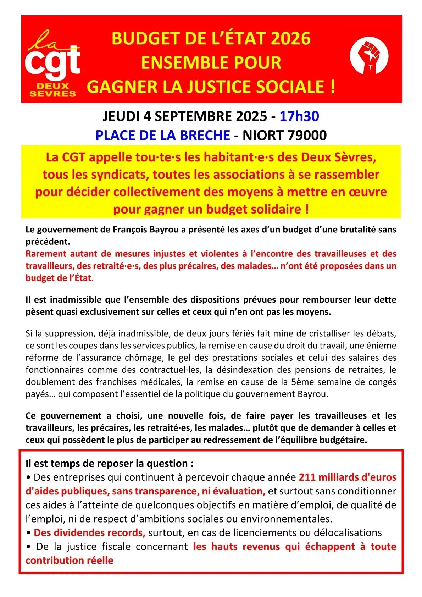
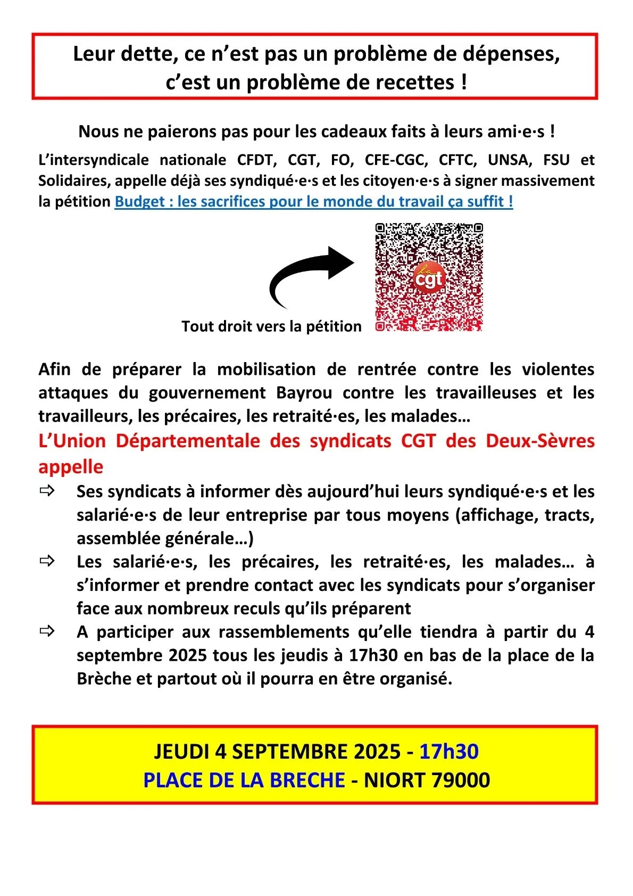

Publication relayée par le PCF 79
La CGT 79 appelle à préparer la mobilisation de rentrée contre le budget 2026
Date de mise à jour indiquée par Facebook · 30 juillet 2025
Texte de la publication · CGT 79 Deux-Sèvres
Appel de l'Union Départementale CGT des Deux-Sèvres à préparer la mobilisation de rentrée contre le budget 2026.
Le gouvernement de François Bayrou a présenté les axes d’un budget d’une brutalité sans précédent.
Rarement autant de mesures injustes et violentes à l’encontre des travailleuses et des travailleurs, des retraité·e·s, des plus précaires, des malades… n’ont été proposées dans un budget de l’État.
Nous appelons
nos syndicats à informer dès aujourd’hui leurs syndiqué·e·s et les salarié·e·s de leur entreprise par tous moyens (affichage, tracts, assemblée générale…)
Les salarié·e·s, les précaires, les retraité·es, les malades… à s’informer et prendre contact avec les syndicats pour s’organiser face aux nombreux reculs qu’ils préparent
A participer aux rassemblements qu’elle tiendra à partir du 4 septembre 2025 tous les jeudis à 17h30 en bas de la place de la Brèche et partout où il pourra en être organisé.


Sources
CGT 79 Deux-Sèvres · publication relayée par le PCF 79 · bibliothèque Facebook · AR-0002-FB-01049
À lire aussi · Budget : les sacrifices pour le monde du travail ça suffit !